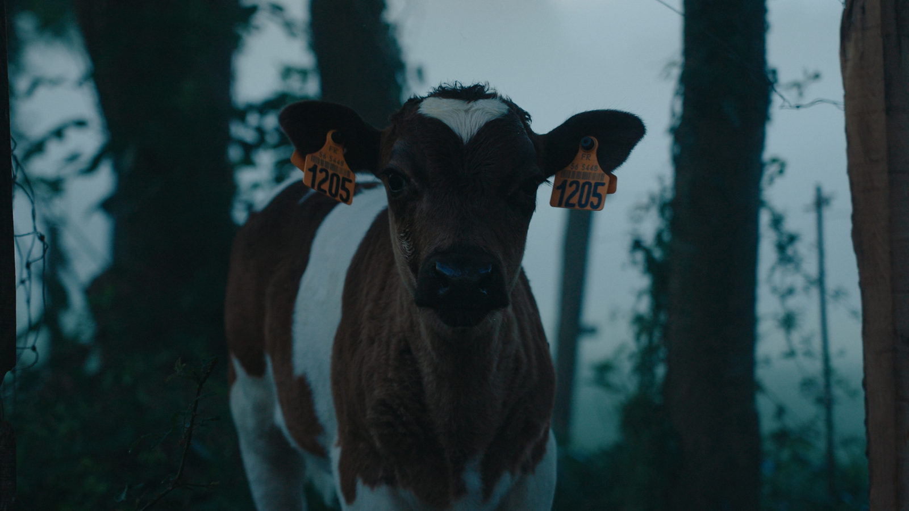
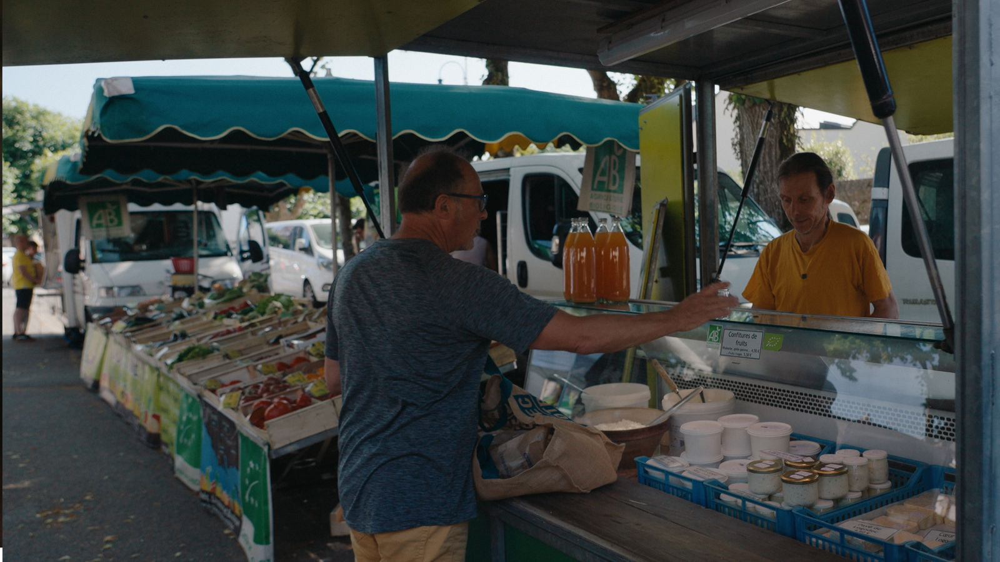
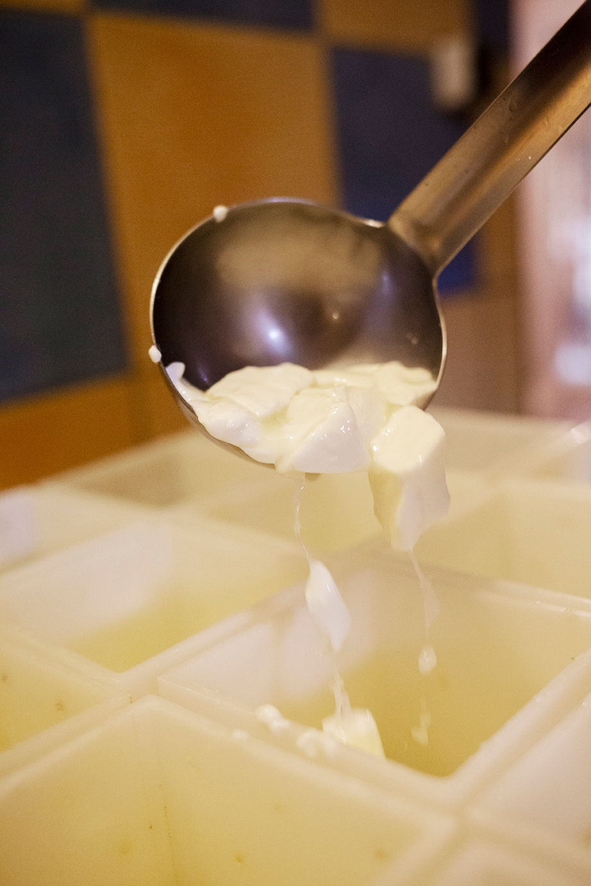
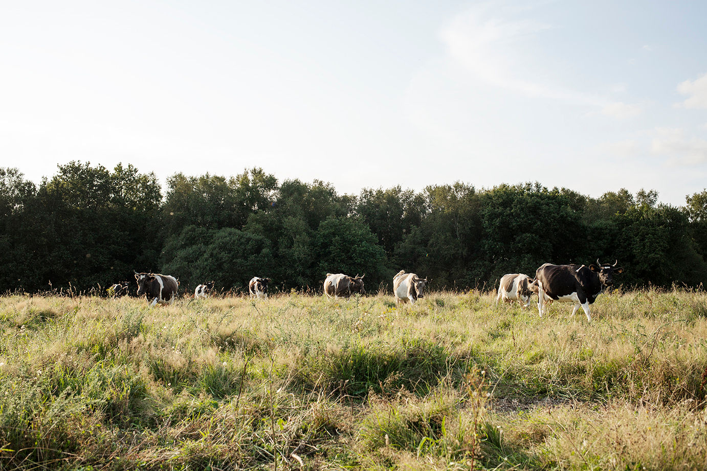
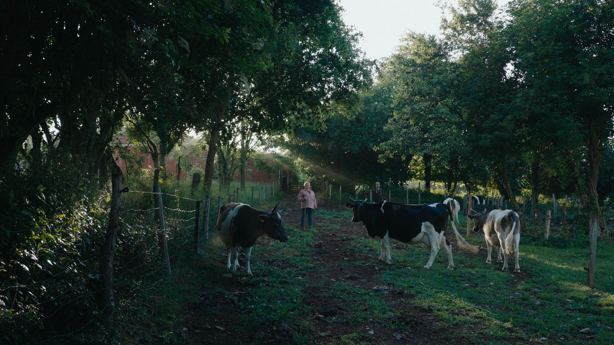
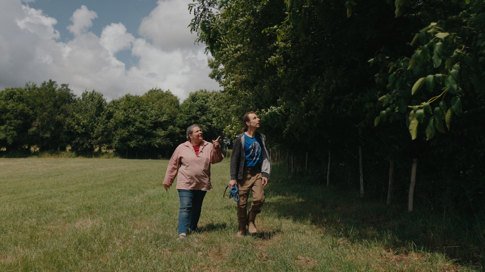
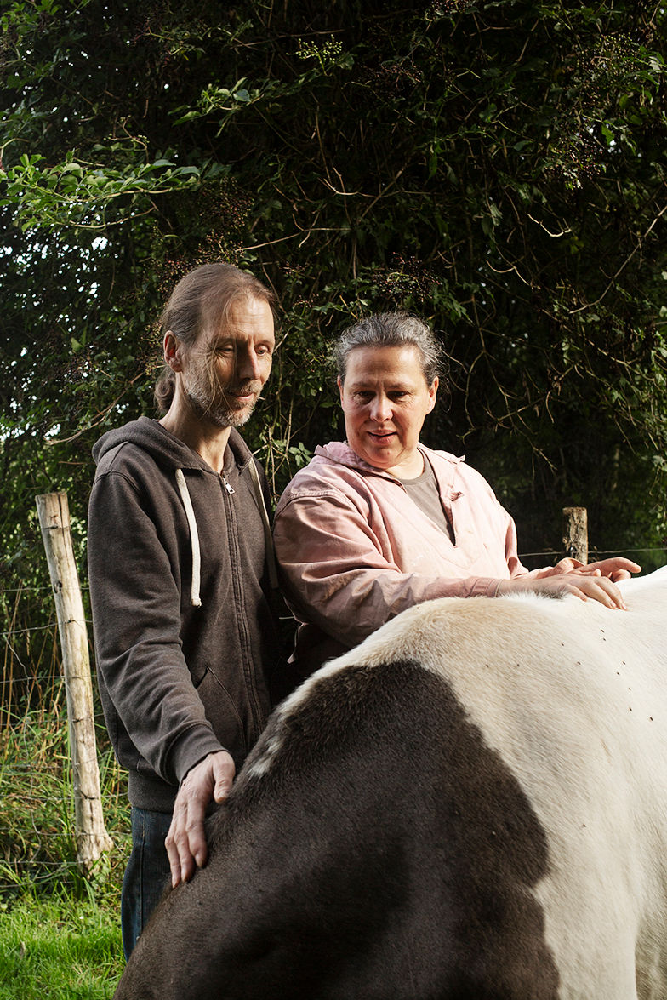

Les fromages de nos vaches bretonnes pie noir
Une petite ferme à Pluvigner. Chaque jour, nous transformons le lait de notre troupeau, et nous vendons tout nous-mêmes sur les marchés.

Où nous trouver cette semaine
Trois rendez-vous, toute l'année.
- Lundi
- MardiAMAP de LanesterLe soir
- Mercredi
- JeudiMarché d'AurayL'après-midi
- Vendredi
- SamediMarché de PluvignerLe matin
- Dimanche


Sur notre étal
Tout est fait à la ferme, avec le lait de nos vaches nourries à l'herbe.
Le pavé de Logodec
Notre fromage à pâte molle, dans l'esprit du pont-l'évêque.
La tomette
Petit fromage fermier, frais ou affiné selon la saison.
Le laezh goell gwell
Lait fermenté traditionnel breton, ensemencé avec le gwell de la fabrication précédente.
Le riz au lait
Préparé avec le lait entier de la ferme.
Fromage blanc, crème et beurre
Les classiques de la crèmerie, faits ici.
Selon la saison. La gamme suit la traite et l'herbe des prairies. Demandez-nous au marché ce qu'il y a cette semaine.




Notre histoire
Nous, Céline et Christophe, avons toujours été passionnés par les animaux et la nature. Nous voulions une petite production qui nous fasse vivre tout en respectant l'environnement, et nous faisons tout nous-mêmes, de l'élevage à la vente.
- 1997
Installation à Séné, en agriculture biologique dès le premier jour.
- 2004
Nous déménageons le troupeau à Logodec, à Pluvigner. Sur nos 18 hectares, il n'y a presque aucun arbre.
- Depuis
Plusieurs centaines d'arbres plantés chaque année : nos prairies sont maintenant entourées de haies.
- Aujourd'hui
Une dizaine de bretonnes pie noir, et tout leur lait transformé dans notre fromagerie.
La ferme en images
Touchez une photo pour l'agrandir.
Photos : Evaine Merle
Une question ?
Écrivez-nous, ou passez nous voir au marché. Nous répondons dès que la traite et la fromagerie nous en laissent le temps.